Whether you're a jobseeker hunting your next opportunity or an employer
looking to hire top talent — this guide walks you through every feature,
screen, and workflow in the app.
7
Sections covered
20+
Screens explained
2
User roles
🏠
Home Screen Screenshot
splash.jpg
⚡ Feature Overview
Everything JobsNext can do
A quick look at the core features available to you — tap any card to learn more.
🔍
Smart Job Discovery
Browse thousands of listings with powerful filters — location, salary, type, and more.
AI-powered match percentages show how well you fit each role.
🤖
AI
AI Match Score
Jone — our AI assistant — analyses your profile against job requirements and gives you
a real-time match percentage on every listing.
⚡
One-Tap Apply
Apply to jobs in seconds using your saved profile. Upload a resume, add a cover letter
(optional), and submit — all without leaving the app.
🔖
Save & Track Jobs
Bookmark any job to revisit later. Your Saved tab keeps everything in one place with
quick-apply actions.
📊
Application Tracking
Monitor every application in real-time. See status updates — submitted, under review,
interview scheduled, or outcome decided.
📝
Skills Assessments
Complete employer-set assessments directly in the app. Timed, structured questions
that demonstrate your skills before an interview.
📚
Career Resources
Access CPD trackers, structured learning paths, interview prep tools, and more —
all designed to advance your career.
🏢
Employer
Employer Dashboard
Post jobs, manage candidates, review applications, and run assessments —
all from a dedicated employer workspace with subscription management.
⭐
Premium Companies
Featured employers get prominent placement. Jobseekers can browse company profiles
and all their open roles in one place.
🔔
Push Notifications
Get instant alerts for new matching jobs, application status changes,
and employer messages — never miss an opportunity.
🔒
App Lock / Biometrics
Keep your job search private. Enable Face ID, fingerprint, or PIN lock
with a configurable time-delay trigger.
💬
AI
Jone AI Assistant
Our built-in AI assistant helps jobseekers with tips, interview prep,
and career advice — and helps employers write better job ads.
📖 Walkthrough
Step-by-step guide
Switch between Jobseeker and Employer using the role toggle in the top-right to see each flow's steps.
Step 1 of 10
1
Splash Screen & App Open
Open JobsNext — you'll see a branded animated splash screen while the app initialises.
After a moment it lands directly on the Browse Jobs screen.
No login required to start exploring.
💡
Note: The app always opens to Browse as a guest. You only need to sign in when you want to save or apply to a job.
🚀
splash.jpg
Animated splash screen
2
Browse Jobs as Guest
Explore thousands of listings without an account. Use the search bar
to find by keyword, company, or location. Tap the filter icon to
narrow by type, salary, and more. Tap any job card to read the full description.
🔍 Keyword search🎙️ Voice search⊞ Filters👁️ No login needed
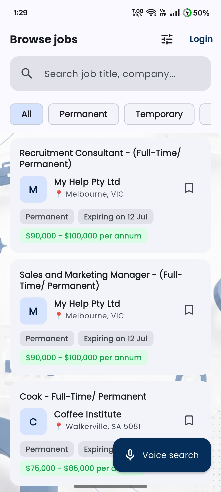
🔍
js_browse_guest.jpg
Browse screen (guest)
3
Sign In or Create Account
When you try to save or apply to a job, the app prompts sign-in.
Tap Sign in, choose Jobseeker, then log into an
existing account. To sign up, select the **Create Account** tab at the top of the auth screen and register a new one.
1. Tap Sign in on any screen
2. Choose Jobseeker
3. Toggle between **Sign In** and **Create Account** tabs
4. Enter email & password details to proceed
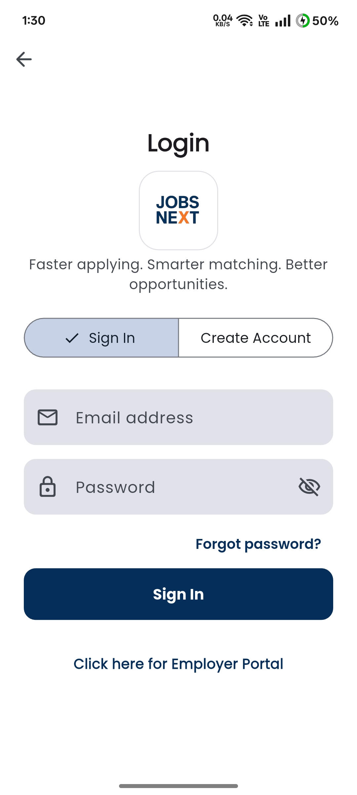
🔐
js_auth.jpg
Jobseeker auth screen
4
Verify Your Email (OTP)
After registering, JobsNext sends a 6-digit OTP to your email.
Enter it on the verification screen to activate your account.
The OTP expires in 10 minutes — tap Resend if needed.
📧
Check spam: If you don't see it within 2 minutes, check your junk/spam folder before tapping Resend.
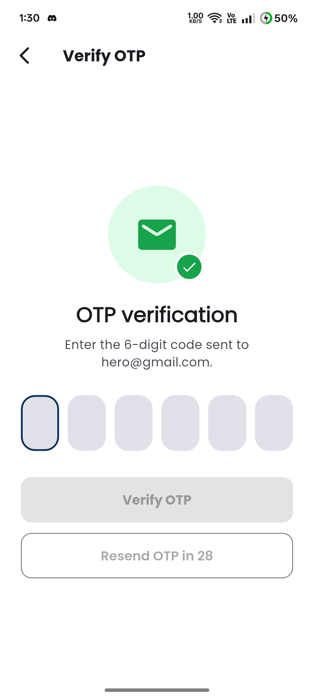
📬
js_otp.jpg
OTP verification screen
5
Complete Your Profile
After verification you're guided through a multi-step profile wizard.
Add your work experience, education,
skills, and upload your resume.
A complete profile powers your AI match scores.
💼 Experience🎓 Education🛠️ Skills📄 Resume
🤖
AI Tip: A 100% complete profile gives the most accurate match scores. Add at least 5 skills and one work experience entry.
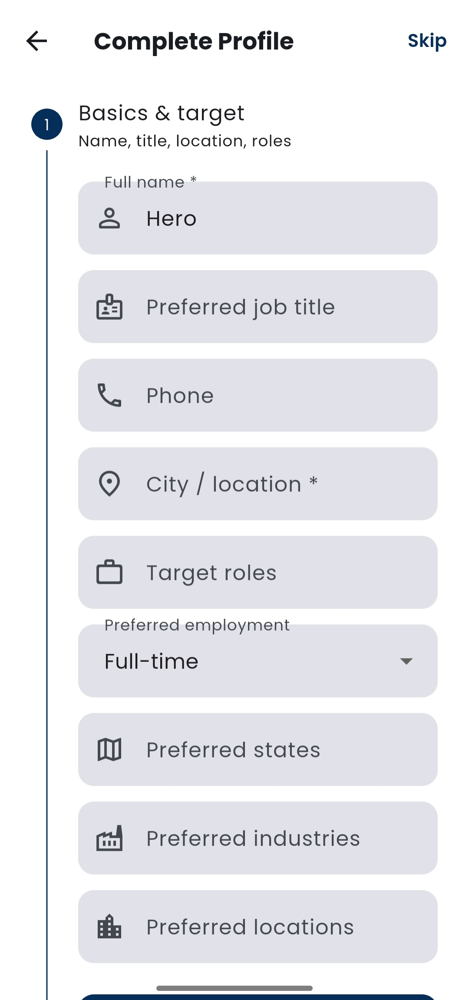
👤
js_complete_profile.jpg
Profile setup wizard
6
Home Screen (Logged In)
After setup you land on your personalised Home screen.
It shows AI-recommended jobs, quick-explore shortcuts (Companies, Resources),
and a search bar. The bottom navigation provides access to all 5 tabs:
Home · Browse · Saved · Applied · Profile.
🏠 Home🔍 Browse🔖 Saved📊 Applied👤 Profile
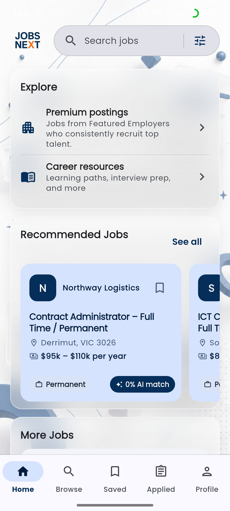
🏠
js_home.jpg
Home screen (logged in)
7
Job Detail & Bookmarking
Tap any job card to open the full Job Detail screen.
See the company header, full description, requirements, salary, close date,
and your AI match score.
Tap the bookmark icon to save it. Tap Apply Now when ready.
🤖
Match Score: Tap the match % badge to see exactly which profile fields contributed to your score and which ones to improve.
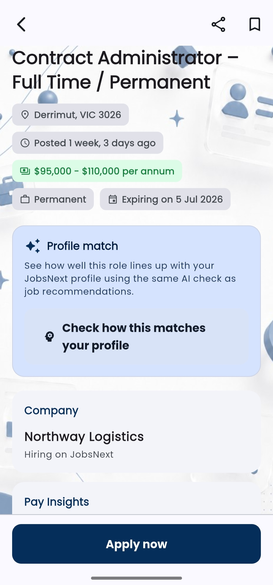
📋
js_job_detail.jpg
Job detail screen
8
Apply to a Job
Tap Apply Now from Job Detail to open the application form.
Select your resume (upload or use saved), write a cover letter
(or generate one with Jone AI), answer any employer screening questions,
and tap Submit.
📄 Resume✍️ Cover letter🤖 AI draft❓ Screening Qs
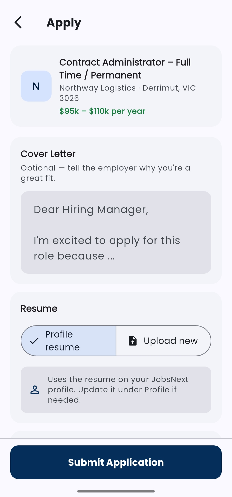
📤
js_apply.jpg
Application form
9
Track Your Applications
The Applied tab shows every job you've submitted.
Each application has a colour-coded status badge:
Submitted · Under Review · Assessment Due · Interview · Accepted · Rejected.
Tap any application to see the full timeline.
If an employer sends an assessment, an Assessment Due button appears — tap it to start.
📬 Submitted👀 Under Review📝 Assessment🗓️ Interview✅ Accepted
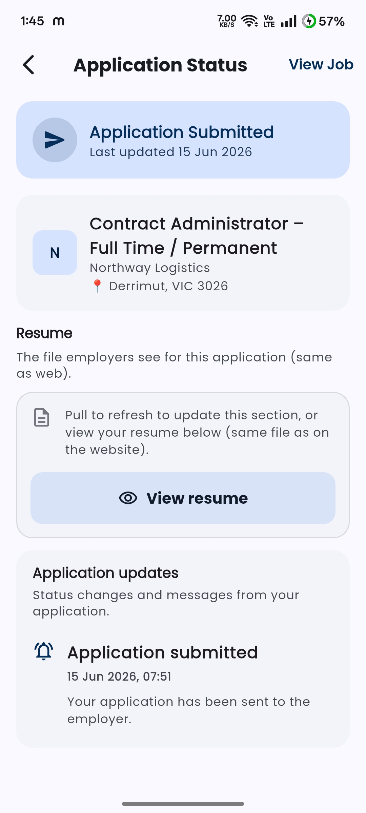
📊
js_applied.jpg
Applied jobs tracker
10
Settings & Account Security
Access Settings from the Profile tab (tap the cog icon).
Manage notifications, set up biometric **App Lock** for privacy, or request permanent **Account Deletion**.
To switch to an employer view, note that role conversion isn't supported; you must log out and create a separate account with a different email.
🔒 App Lock (Biometrics/PIN)🗑️ Account Deletion🔄 Role Switching Info🔔 Notifications
🎉
You're all set! Head back to the app and start your job search. Use the checklist below to track your onboarding progress.
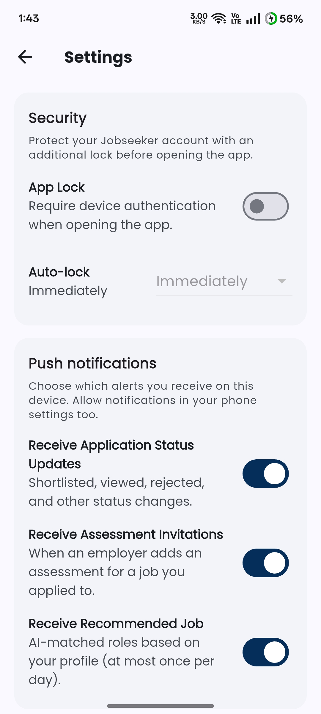
⚙️
js_settings.jpg
Settings screen
1
Sign Up as Employer
Open JobsNext and tap Sign in.
On the auth screen switch to the Employer tab.
Enter your company name, official corporate email, authorized registration number, and password to register a new profile.
The employer theme uses the orange colour palette throughout.
🏢
Separate accounts: Jobseeker and Employer are distinct account types — use a separate email for each. You cannot switch between roles on the same account.
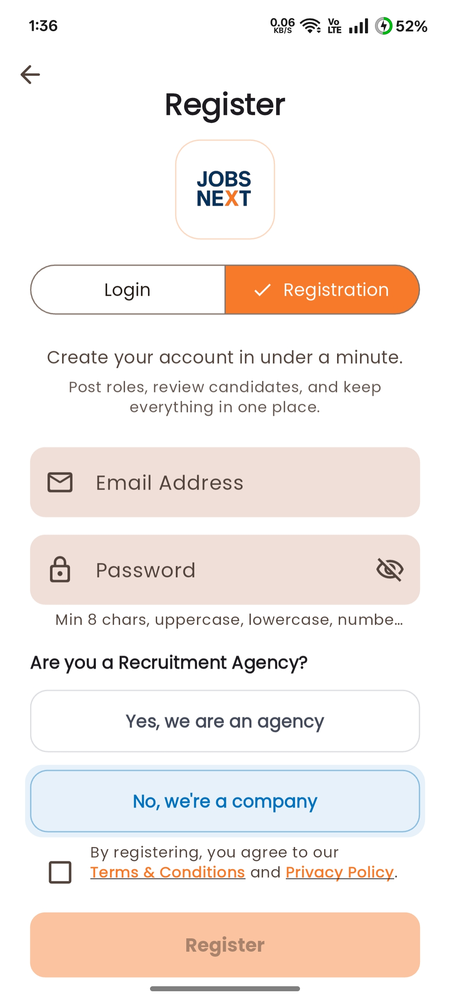
🔐
em_auth.jpg
Employer auth screen
2
Verify Your Email
Employer accounts require email verification before posting jobs.
Check your inbox for the verification email and click the link,
or enter the code shown. You cannot post jobs until your email is confirmed.
📧
Check spam: If the email doesn't arrive within 2 minutes, check your junk folder and tap Resend on the verification screen.
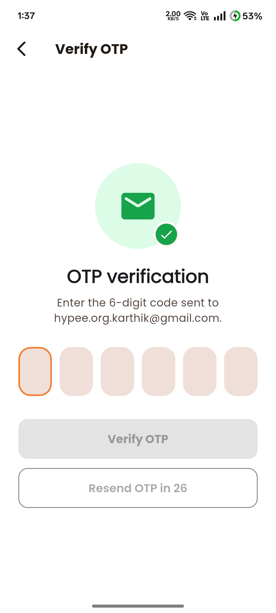
📬
em_email_verify.jpg
Employer email verification
3
Employer Dashboard
After setup you land on the Employer Dashboard — your command centre.
See active job postings, total applications, recent candidate activity,
and quick-action buttons.
The bottom nav: Dashboard · Job Postings · Assessments · Profile.
📊 Stats overview📋 Active jobs👥 Recent candidates🤖 Jone AI
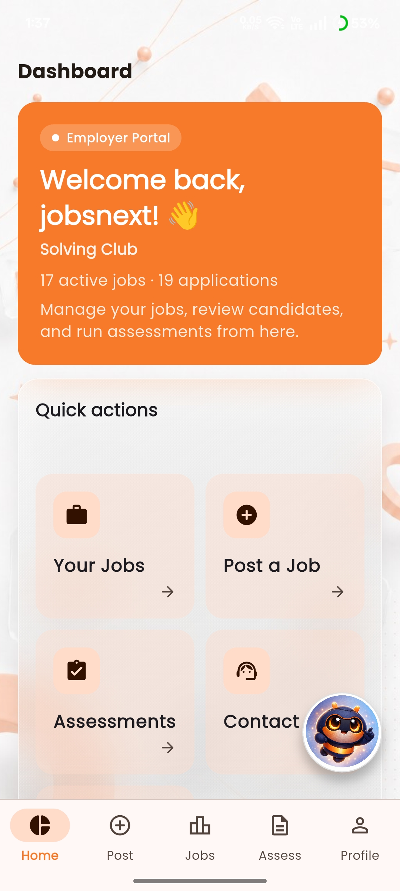
🏢
em_dashboard.jpg
Employer dashboard
4
Post a Job
Tap ＋ Post Job from the Dashboard or Job Postings tab.
Fill in title, description, requirements, salary range, location,
employment type, and close date. Preview your listing then publish.
Job credits are consumed per posting based on your subscription plan.
🤖
Jone AI: Tap "Generate with AI" to have Jone write a compelling job description based on your inputs. Edit it to match your company tone.
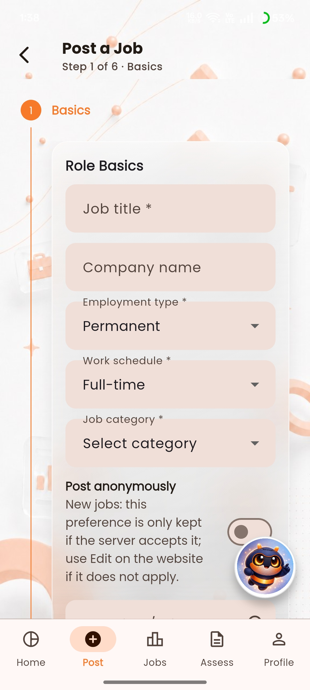
📝
em_post_job.jpg
Post job form
5
Manage Candidates
Tap a job posting to see its Candidates list.
Filter by status and sort by match score or date.
Tap a candidate to view their full resume, profile, and application.
Update their status, send an assessment, or move them to the next stage.
👥 All applicants📊 Match scores📄 View resume🔄 Update status
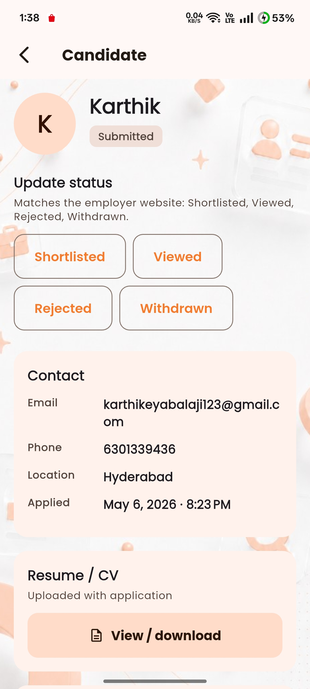
👥
em_candidates.jpg
Candidates list
6
Create & Run Assessments
The Assessments tab lets you build skill tests.
Add timed multiple-choice or text questions.
Assign an assessment to a candidate from their application screen.
Candidates complete it inside the app. Results appear with scores and answers.
💡
Tip: Send assessments before interviews to filter serious applicants — saves time scheduling for unqualified candidates.
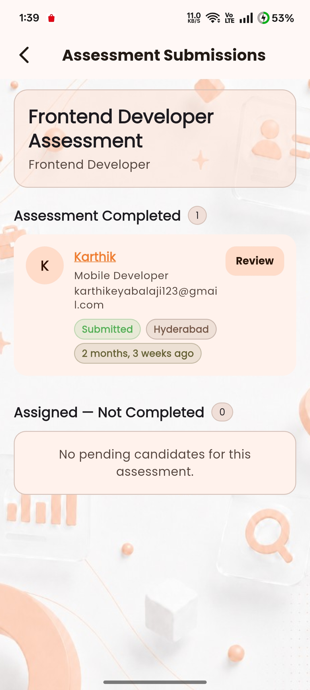
📝
em_assessments.jpg
Assessments screen
7
Manage Subscriptions
Access Subscriptions from your Profile tab.
View your current plan, remaining job posting credits, and billing history.
Upgrade to post more jobs or get featured placement on the platform.
All billing is managed securely in-app.
💳 Plan management🎯 Job credits⭐ Featured posts🧾 Billing history
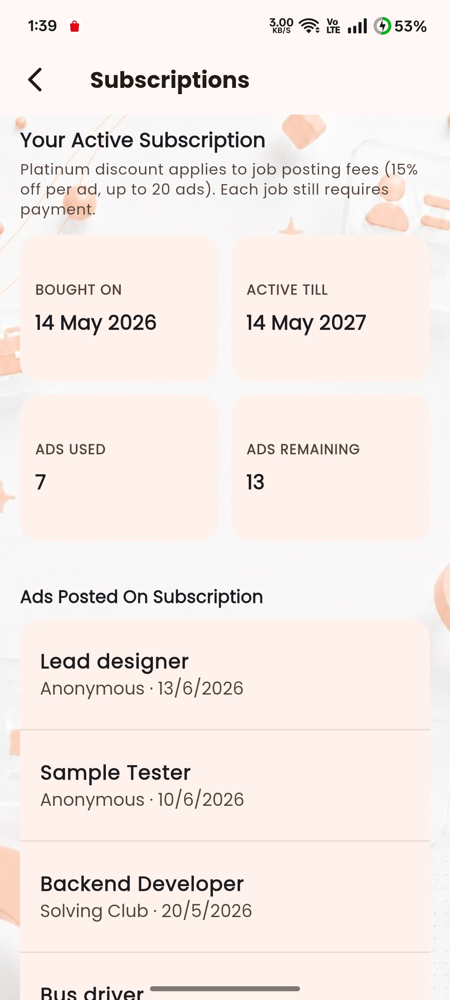
💳
em_subscriptions.jpg
Subscriptions screen
8
Employer Profile & Settings
Go to your Employer Profile to update company details, logo, website link, and bio.
Open Settings to toggle notifications, configure biometric **App Lock** security, or request permanent **Account Deletion**.
To switch views, note that role conversion isn't supported; you must log out and sign in with a Jobseeker account.
🎉
You're all set! You now have everything you need to attract great talent with JobsNext. Start by posting your first job.
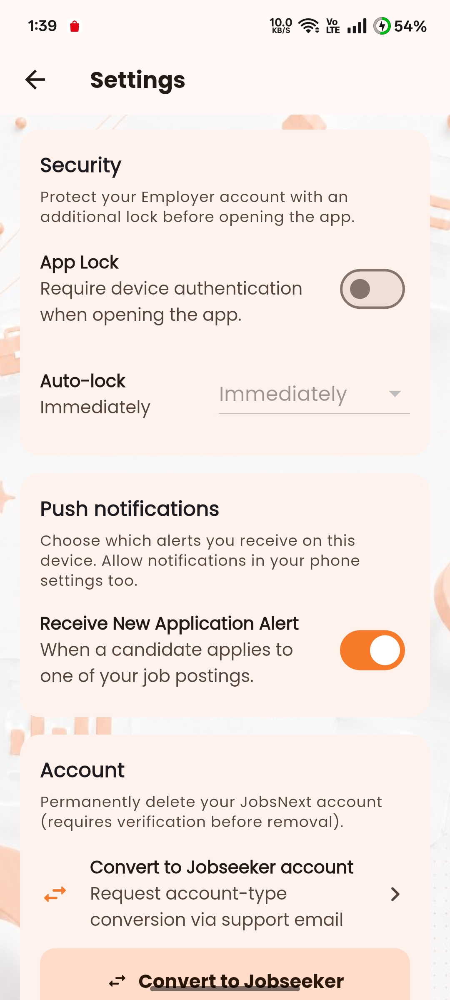
⚙️
em_settings.jpg
Employer settings
📱 Screens Guide
Every screen, explained
Select a screen below to see the interactive annotations and what each element does.
Guest Browse Screen
The landing pad when first launching the app. You can explore jobs immediately without an account.
1
Search & Filters
Type job titles, companies or skills. Voice search is supported. Filters are fully accessible.
2
Job Card List
Displays matching jobs with quick info: salary, location, and tags.
3
Guest Profile Tab / Bookmark Warning
Tapping Saved, Applied, or Profile prompts the Login/Signup screen.
⚡ How to Use
1. Tap the search bar and input keyword terms (e.g. "Flutter", "Manager").
2. Tap the microphone icon for hands-free search by voice.
3. Tap the filter icon to adjust sorting, salary range, and employment type.
4. Click any job card in the list to open its details.
🔍
js_browse_guest.jpg
Guest Browse screen
Jobseeker Auth & OTP
Dedicated login screen for jobseekers, followed by the OTP verification screen.
1
Login Credentials
Enter email and password. Built-in validation checks formatting before submission.
2
OTP Input Fields
Six separate digit fields. Automatically focuses the next field as you type.
3
Resend Timer
Counts down from 60 seconds. Resend button is enabled once it hits 0.
⚡ How to Use
1. On the Auth screen, enter your registered email address and password.
2. Tap "Forgot Password?" below the password input if you need to recover access.
3. Tap "Log In" to submit. You'll be redirected to the OTP Verification screen.
4. Input the 6-digit OTP sent to your email. The fields auto-focus sequentially.
5. If the timer runs out before you receive the code, click "Resend Code".
🔐
js_auth.jpg
Jobseeker Auth screen
Jobseeker Registration
Dedicated registration screen for jobseekers to set up their profiles.
1
Registration Fields
Enter Full Name, Email, Password, and Confirmation. Password matches are validated locally.
2
Terms & Agreements
A checkbox confirming you agree to the Terms of Service and Privacy Policy.
3
Sign In Tab Switching
Allows switching back to the Login screen directly.
⚡ How to Use
1. Select the "Create Account" tab at the top of the Auth screen.
2. Fill in your Full Name, Email address, and choose a secure Password.
3. Re-enter your password in the Password Confirmation field.
4. Toggle the agreement checkbox and tap "Register" to submit.
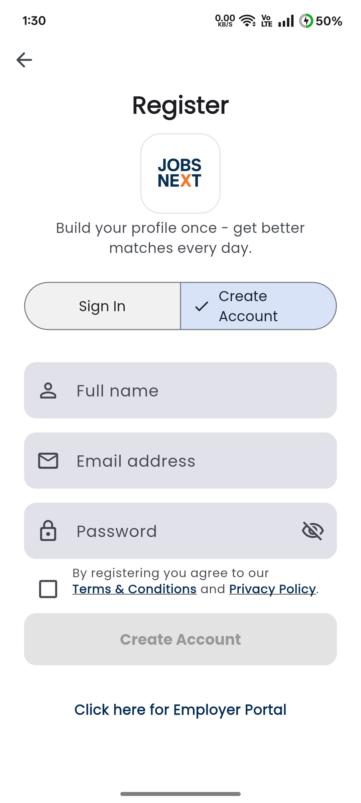
📝
js_register.jpg
Jobseeker Registration screen
Profile Completion Wizard
The multi-step wizard shown right after registration. Helps you fill essential information step-by-step.
⚠️Account conversion is not supported. Jobseeker and Employer are separate account types.
✔️ To use the app as an Employer, log out and sign up with a different email address choosing the Employer role.
⚙️
js_settings.jpg
Settings Screen
Employer Auth & Verify
Dedicated employer authentication screen with primary orange color layout.
1
Company Signup Info
Requires company name, authorized registration number, and corporate email address.
2
Verification Code
Email-based verification link screen to activate job posting functionality.
⚡ Register as Employer
1. On the welcome screen tap I'm an Employer then tap Create Account.
2. Enter your Company Name, Registration Number, and your corporate email address.
3. Create a secure password and tap Register.
4. A 6-digit OTP is sent to your corporate email — enter it on the verification screen.
5. On success you'll be taken to complete your company profile before accessing the dashboard.
🔐 Login as Employer
1. Select I'm an Employer on the welcome screen then tap Login.
2. Enter your registered corporate email and password, then tap Sign In.
3. Tap Forgot password? to receive a password reset link via email.
🔐
em_auth.jpg
Employer Auth Screen
Email Verification Screen
Verify corporate email structure to satisfy trust guidelines and unlock platform features.
1
Sent Notice
Indicates the corporate email address where the verification code has been dispatched.
2
Confirm Button
Checks current code state and redirects directly to dashboard upon successful matching.
⚡ How to Use
1. After registering, check your corporate email inbox for the verification email from JobsNext.
2. Copy the 6-digit code from the email and enter it in the boxes on screen.
3. Tap Confirm — you'll be redirected to the dashboard on success.
4. Didn't receive the email? Tap Resend Code (available after 60 seconds). Also check your spam/junk folder.
📧
em_email_verify.jpg
Employer Verification Screen
Employer Dashboard
Central interface for recruiters to track applicant count, active roles, and remaining job credits.
1
Recruitment Metrics
Count of total views, direct clicks, applications, and current assessments pending.
2
Quick Action Hub
One-tap navigation buttons to Post Job, View Candidates, or Setup Assessments.
3
Active Listings
Mini display of your recent job posts. Tap to see detailed candidate listings.
⚡ How to Use
1. The Metrics Bar at the top shows live counts: Views, Clicks, Applications, and Pending Assessments.
2. Use the Quick Action Hub to tap Post Job to create a new listing immediately.
3. Tap any active listing card to drill into that job's candidate list and application statuses.
4. Tap View All next to Active Listings to see all your current and past job postings.
🏢
em_dashboard.jpg
Employer Dashboard Screen
Post a Job Screen
Standardised job posting form. Integrates Jone AI to draft descriptions based on minor inputs.
1
Basic Info Section
Role title, location (remote/hybrid/on-site), experience target, and job category chips.
2
Jone AI Description Writer
Auto-generates clean structured description paragraphs with key requirements.
3
Custom Screening Setup
Add up to 5 simple text or yes/no questions for applicants to fill on application.
⚡ How to Use
1. From the Dashboard tap Post a Job or tap the + FAB on the Jobs tab.
2. Fill in Basic Info: job title, location type, experience level, and category.
3. In the Description field, type a brief summary and tap Generate with Jone AI to expand it into a full job description.
4. Edit the AI draft as needed — add salary range, benefits, and specific requirements.
5. Scroll to Screening Questions and add up to 5 custom questions for applicants.
6. Tap Publish — the job goes live instantly and uses 1 job credit from your balance.
📝
em_post_job.jpg
Post Job Form Screen
Candidates List
Sort and view applicants by date or AI match score. Shows quick overview info of each applicant.
1
AI Match Score Sorting
Orders candidates descending by match score, making top profiles instant to find.
2
Candidate Details Card
Displays name, primary role, match score, resume tag, and active application state.
3
Filter by State
Narrow applicants down: Submitted, Under Review, Shortlisted, Rejected.
⚡ How to Use
1. Tap a job listing from your Dashboard or Jobs tab to open its Candidates List.
2. Use the Sort dropdown to order by AI Match Score (highest first) or by Date Applied.
3. Use the Filter chips to show only: Submitted, Under Review, Shortlisted, or Rejected.
4. Tap a candidate card to open their full profile, view their resume, and read their cover letter.
5. In the candidate detail view, tap Move Stage to advance or reject the application. Tap Message to open a direct chat.
👥
em_candidates.jpg
Candidates List Screen
Employer Assessments
Create, review, and evaluate skill-based tests. Shows candidate performance scores.
1
Create Assessment FAB
Add a new test, configuring duration (in minutes) and custom test questions.
2
Active Assessments List
Shows all active tests, applicant count assigned, and completion rates.
⚡ How to Use
1. Tap Assessments from the bottom nav or Dashboard quick action.
2. Tap the + Create button. Enter a title, set the time limit (minutes), and add questions (multiple choice or short answer).
3. Tap Save Assessment to publish it. It will appear in your assessments list.
4. To assign an assessment to an applicant, open the candidate detail screen and tap Send Assessment.
5. Once the candidate submits, tap the assessment card to view their score and individual answers.
📝
em_assessments.jpg
Assessments Main Screen
Subscriptions & Billing
Buy job credits, view transaction details, or upgrade current subscription tiers.
1
Plan Tiers
Select Standard, Pro, or Enterprise. Details cost, maximum credits, and search tools.
2
Active Balance
Remaining job post credits shown at the top. Refreshes instantly on payment.
⚡ How to Use
1. Tap Subscriptions from the side menu or Profile tab to view your current plan and credit balance.
2. Review the Plan Tiers: Standard (basic), Pro (advanced analytics + candidate search), Enterprise (unlimited).
3. Tap Upgrade on your chosen plan to proceed to checkout via the in-app payment gateway.
4. After payment, credits are added to your balance instantly. Each job post deducts 1 credit.
5. Tap Transaction History to view past purchases and download invoices.
💳
em_subscriptions.jpg
Subscriptions Screen
Employer Settings
Manage company profile, workspace notification parameters, and login security options.
1
Company Brand Settings
Upload brand icon, tagline, description, and link to corporate website.
2
Workspace Notification Rules
Toggle push/email alerts when candidates apply, submit assessments, or message.
⚡ How to Use
1. Go to Profile → Settings to access all employer configuration options.
2. In Company Branding, upload your company logo, add a tagline, and enter your corporate website URL.
3. Under Notifications, toggle alerts for: new applications, assessment completions, and direct messages from candidates.
4. Use Account Security to change your password or enable App Lock with biometrics.
5. Tap Delete Account under the Account section and confirm via email to permanently close your employer account per the Account Deletion Policy.
⚙️
em_settings.jpg
Employer Settings Screen
❓ FAQ
Frequently asked questions
Can't find your answer? Contact support from the app's Help section.
🔍
Do I need an account to browse jobs?
▾
No — you can browse and search all jobs without creating an account. You only need to sign in when you want to save a job or submit an application.
How does the AI match score work?
▾
Jone (our AI) compares your profile — skills, experience, education, and job preferences — against each job's requirements. The percentage reflects how closely you match. A 100% profile gives the most accurate scores. Scores update automatically as you update your profile.
Can I apply to multiple jobs at once?
▾
Yes. You can apply to as many jobs as you like. Each application is independent. Use the Saved tab to shortlist roles you want to apply to in bulk, then go through them one by one — your saved profile data auto-fills each application.
How do I reset my password?
▾
On the login screen, tap Forgot password? below the password field. Enter your registered email address and tap Send. You'll receive a reset link within a few minutes. If you don't see it, check your spam folder.
What is App Lock and how do I enable it?
▾
App Lock adds an extra layer of privacy using your device's biometrics (Face ID, fingerprint) or PIN. Go to Profile → Settings → App Lock and toggle it on. You can also choose a delay: lock immediately, after 1 minute, 5 minutes, etc.
How do push notifications work?
▾
JobsNext sends push notifications for: new jobs matching your saved search, application status changes, assessment invitations, and employer messages. You can manage which notifications you receive from Settings → Notifications.
How do employers post a job?
▾
After logging in as an employer, tap the ＋ button on the dashboard or Job Postings screen. Fill in the job details (title, description, requirements, salary, location, close date), preview your listing, and publish. Job credits are consumed per posting depending on your subscription plan.
What are assessments?
▾
Assessments are employer-created skill tests that candidates complete inside the app. Employers build them from the Assessments section. Candidates receive an "Assessment Due" notification and must complete it within the deadline. Results are scored and displayed to the employer in the Candidates view.
Can I switch between Jobseeker and Employer modes?
▾
No — Jobseeker and Employer are separate account types with separate logins. If you need both, create two accounts with different email addresses. The app's interface (colour theme) switches automatically based on your account role.
How do I delete my account?
▾
Go to Profile → Settings → Account → Delete Account. You'll be asked to confirm via email. Account deletion is permanent and removes all your profile data, saved jobs, and application history. You can view the full Account Deletion Policy, read our Privacy Policy, and review the Terms & Conditions.
No questions match your search. Try different keywords.
💡 Tips & Best Practices
Get the most out of JobsNext
Pro tips, common mistakes to avoid, and recommended workflows.
✅ Productivity
Complete your profile first
Before applying to a single job, spend 10 minutes completing your profile. A 100% profile gives you accurate AI match scores and makes your application stand out.
✅ Productivity
Use voice search on Browse
Tap the microphone icon on the Browse screen to search hands-free. Great for specific job titles or long search terms — faster than typing.
✅ Productivity
Save first, apply strategically
Bookmark everything that interests you during one session. Then review your Saved tab and apply to the top 5–10 that best match your profile. Quality over quantity.
✅ Productivity
Enable push notifications
Turn on notifications for new job alerts so you can be among the first to apply. Many employers close roles within 24–48 hours of posting when they receive enough strong applications.
⚠️ Avoid
Don't apply with an empty profile
Applying without a completed profile means employers see very little about you, and your AI match score will be low. Employers often sort candidates by match score first.
⚠️ Avoid
Don't ignore assessment deadlines
When an employer requests an assessment, it appears as "Assessment Due" on your Applied tab. Missing the deadline often disqualifies your application automatically. Set a reminder.
⚠️ Avoid
Don't use generic cover letters
If a role requires a cover letter, personalise it. Use Jone AI to draft a starting point, then edit it to include specifics about why you want this role at this company.
🔄 Workflow
Recommended daily routine
Morning: check notifications for status updates. Browse for 10 minutes and save new jobs. Evening: review saved jobs and apply to the best matches. Track on Applied tab.
🔄 Workflow
For employers: use assessments early
Send assessments to promising candidates before scheduling interviews. This filters serious applicants and saves interview time. Create reusable assessment templates for recurring roles.
🔄 Workflow
Keep your resume updated
Upload a new resume version every time you complete a new project or role. JobsNext lets you store and select from multiple resume versions per application.
✅ Checklist
Getting started checklist
Complete these steps to be fully set up.
Your progress
0 of 10 tasks complete
0%
🎉
You're all set!
You've completed every onboarding step. Good luck — we're rooting for you!
Step 1 of 6
Welcome to JobsNext!
This brief tour will walk you through the key features of the app. You can skip at any time.